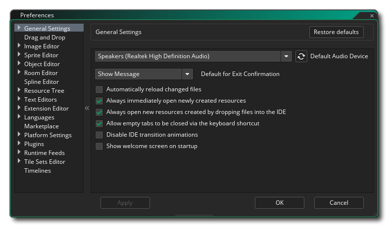
The General Preferences are used to define the general behaviour of the GameMaker Studio 2 IDE. The most general ones are listed on the main page while many others are split into multiple sub-categories, explained further down this page.
- Default Audio Device: Here you can choose the default
audio device for the GameMaker Studio 2 IDE to use. You can
refresh the list by clicking the Refresh Button

- Default For Exit Confirmation: This option permits you
to set whether a confirmation message should be shown when you exit
GameMaker Studio 2. By default this is on, but can be set to
OK to skip the message as if you'd clicked okay.
- Automatically Reload Changed Files: If this is checked
then the IDE will automatically scan and check
- Immediately Open New Resources: If this is checked,
every time you create a new resource in the Resource Tree, the
corresponding resource editor will be opened automatically. This is
checked by default and unchecking it will mean that you have to
manually open all newly created resources.
- Always Open New Resources Dropped Into IDE: Certain
resources (like sprites or sounds) can be dragged onto the main
Workspace in the GameMaker Studio 2 IDE and will be detected
and added as a new resource in the Resource Tree. By default the
corresponding resource editor will also be opened for editing when
this happens, but un-checking this option will prevent the editors
from being opened and you will be required to open them
manually.
- Allow Empty Tabs To Close Via Shortcut: You can close
any open Tabs using the keyboard shortcut
 +
W, but if you disable this option that shortcut
will no longer work. This is enabled by default.
+
W, but if you disable this option that shortcut
will no longer work. This is enabled by default.
- Disable IDE Transitions: The GameMaker Studio 2
IDE has a number of animated transitions for things like opening
windows etc... however they are not to everyone's taste and you may
experience a performance boost if they are disabled on older or
underpowered machines if they are disabled. You can disable them
here, and they are on by default.
- Show welcome screen on startup: This is on by default
and simply tells GameMaker Studio 2 to show a brief splash
screen when you start the program. Un-checking this will prevent
the splash screen from showing.
The options above are the main options available from the General preferences, but there are a number of extra options available to you in the sub-categories listed below:
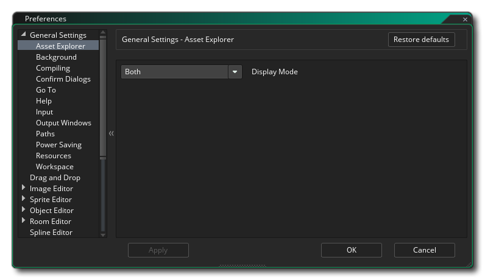When you go to add a sprite to an object or when you want to use a font in Drag and Drop or in any number of situations, you will be presented with the Asset Explorer:
By default it shows both a Tree View (on the left) and a List View (on the right) but using this preference you can choose to have it only show one or the other.
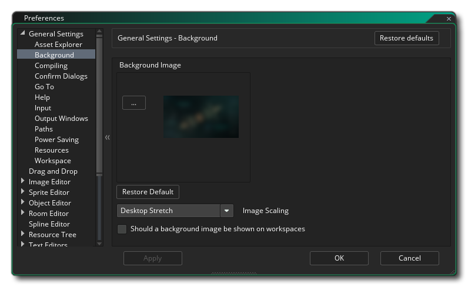The Background preferences deal with the Workspace background and what it will display as well as how it will be displayed. The options are:
- Background Image: This is the image file that will be used as the background for the different Workspaces. There is a default image supplied and it is enabled by default, but you can select your own image here. The types of image that you can select from are *.png, *.gif, *.jpg, *.jpeg, *.tif, *.tiff, *.ico, *.bmp, *.2bp or *.mdi, but note that regardless of initial image format, all files will be saved out for use as *.png files, so animated *.gif files for example will only be rendered as a single initial frame.
- Restore Default: If you have changed the background image to be something other than the default image, you can restore the default using this button at any time.
- Image Scaling: This controls how the background image will be scaled within the different workspaces. The choices are:
- Stretch - The image will be stretched to fit the workspace, changing scale depending on the visible docks
- Tile - The image will be tiled to cover the workspace
- Best Fit - The image will be scaled to fit the workspace proportionally, with bars being added around the edge if it is not a 1:1 fit
- Desktop Stretch - The background will cover the whole workspace, regardless of any visible docks
- Should Background Images Be Shown: This option controls whether the selected background image should be shown or not. By default this is checked as on.
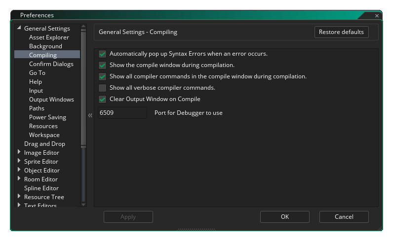The Compiling preferences deal with certain options related to the output when compiling your game for testing or creating a package, as well as certain areas of the compiling process. The options are:
- Automatically pop up Syntax Errors when an error occurs: Enable or disable syntax error notification when compiling. This is on by default.
- Show the compile window during compilation: By default the compile window will be shown when you compile your projects, even if the compile doc is closed (it will open for the compile). Unchecking this will switch this behaviour off and the compile window will on be visible if open.
- Show all compiler commands in compile window during compilation: This is checked by default and forces the compiler to show all relevant commands in the compile window. Un-checking this will make the output smaller and have less information.
- Show all verbose compiler commands: Checking this will force the compiler to show extra commands related to the compilation process. In general this is only required when debugging and may be requested by support should you have an issue. It is off by default (and this is the recommended setting).
- Clear output window on compile: By default the compiler window will clear all previous messages from the compile output window at the start of each build, however un-checking this will maintain previous compiler logs. This is on by default and is the recommended configuration since large compiler logs can slow down compile times.
- Port for Debugger to use: This sets the port number for the Debug Module to use. The default value is 6509.
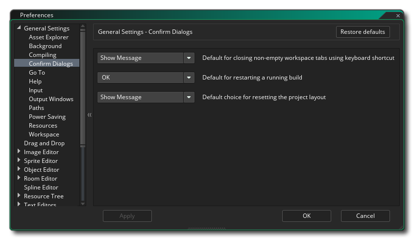The Confirm Dialogue preferences deal with some of the general confirmation pop-ups that will appear when performing certain actions in the GameMaker Studio 2 IDE. The options are:
- Default for closing non-empty workspace tab using keyboard shortcut: The keyboard shortcut mentioned above can be used to close any open tab, but sometimes you may accidentally close an empty tab that you require. To prevent this you can set this option to "Show message" (the default option) to ask if you really want to close that empty tab. The other settings are "No", to simply do nothing if the shortcut is used, or "Okay" to close the tab without any message.
- Default for restarting a running build: When you restart a build and another previous one is still running, you will be asked whether you want to stop the current build first. Un checking this message will suppress that message and force GameMaker Studio 2 to assume you had clicked "Okay" as a response. This option is set to "Show Message" by default.
- Default choice for resetting the project layout: When you select to reset the project layout (from the Layouts Menu) you will, by default, be shown a warning message about how this will close any open resource windows. However you can suppress this message and automatically reset the layout by selecting "Okay", or have it do nothing by selecting "No". The default value is to have "Show Message".
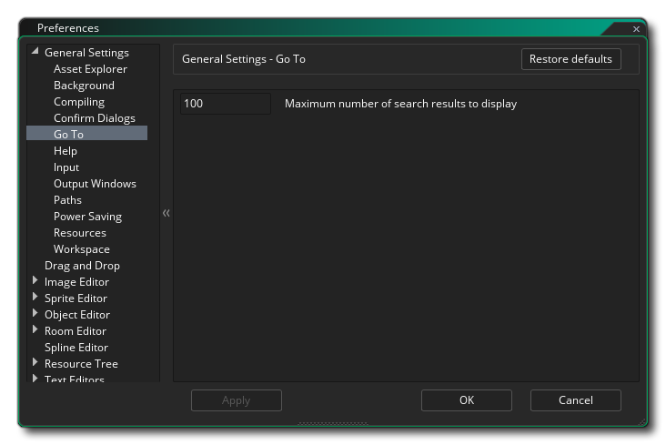The preferences here are for Go To window, which you can open using the keyboard shortcut
- Maximum number of search results to display: This option controls the maximum number of returned results when you use the Go To search window.
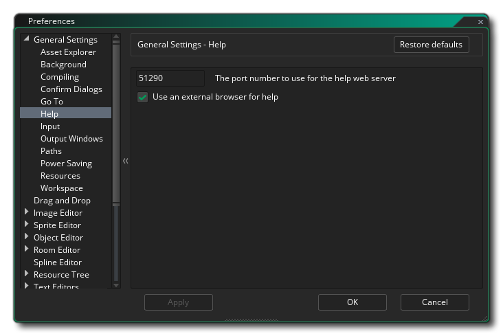The helpfile is designed to operate like a web page and as such requires the use of the GameMaker Studio 2 micro web server, or the use of an external browser. These settings can be changed here:
- Port number to use for the web server: This sets the port number for the micro web server to use. The default value is 51268.
- Use external browser for help: If this is checked then opening the help file will open it using the default browser for your system. This is on by default, and switching it off will force the help file to open in workspace within the IDE.
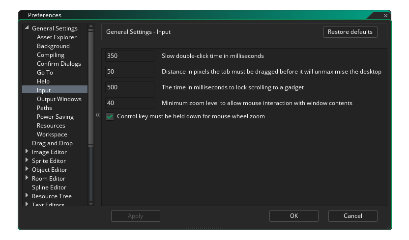The Input preferences control certain aspects of the mouse and keyboard input within the IDE. The available options are:
- Slow double click time (ms): Some areas of the IDE require a slower double click to work correctly, for example when renaming a resource (a fast double click will open the resource editor, while a slow double click will permit you to rename it). This option permits you to set the detection speed, with a default value of 350ms.
- Distance tab must be dragged to un-maximise the desktop: When you drag a workspace tab away from its default position within the IDE, if there is only one workspace active at that time then the GameMaker Studio 2 window will un-maximise and move with the mouse (if you have more than one workspace active a new instance of the IDE will be created to hold the workspace). This setting controls how far you have to drag the tab before the workspace recognises it, and the default value is 4px.
- Time in seconds to lock scrolling to a gadget: This option deals with the time that GameMaker Studio 2 should wait between scrolling windows that are overlapping. Essentially, When you're scrolling in window "A", the cursor might hover over another scrollable area in window "B", so this preference defines how long you have to wait after you stop scrolling "A" before you can then scroll "B", so you don't accidentally start scrolling different panels. The default value is 500ms.
- Minimum zoom level to allow mouse interaction with window contents: This option controls the zoom cut-off point at which the mouse will no longer be able to interact with workspace windows (ie: add nodes, drag windows, etc...). The default value is 40.
- Control key must be held down for mouse wheel zoom: When this is checked all editors (and the main workspace) will have zoom enabled with
, while un-checking it will enable zoom with only the mouse wheel
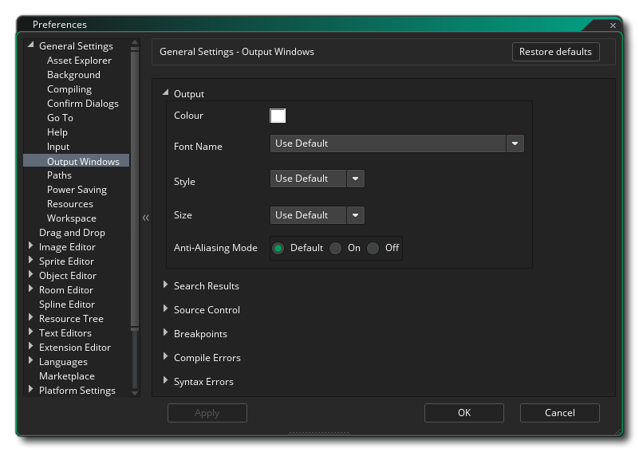The Output Window preferences control the different colour and formatting options for the various different output windows in the IDE. Each of the different windows has the same set of options, which are listed below:
- Colour: The default colour for the text being written to the window.
- Font Name: The name of the font to use (available fonts will depend on those installed on your system).
- Style: The font style to use, like bold or italics (note that not all windows will permit the same styles and it will also depend on the font used).
- Size: The size to set the font to for the given output window.
- Anti-Aliasing Mode: Here you can set the anti-aliasing mode for the output windows font rendering. You can choose to let the IDE decide by selecting Use Default, or you can force it On or Off by selecting either of those options.
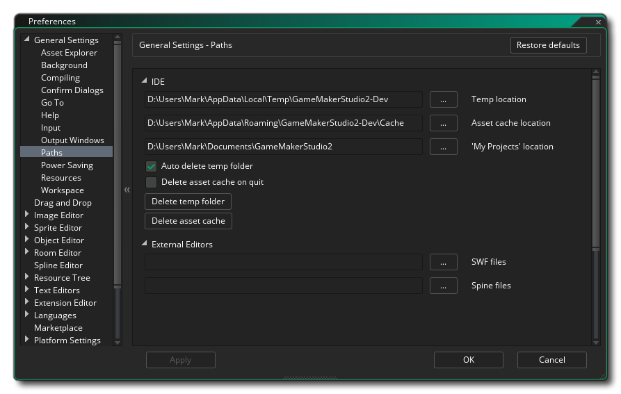The Path preferences control the different file paths required by elements in the GameMaker Studio 2 IDE as well as for any external editors that you require. The following options exist for the IDE:
- Temp Location: The location for saving all the temporary folders. By default this is \Users\<Username>\AppData\Local\Temp\GameMakerStudio2.
- Asset Cache: The location for saving the asset cache for each project. By default this is D:\Users\<Username>\AppData\Roaming\GameMakerStudio2-Dev\Cache.
- "My Projects" Location: The location qhere GameMaker Studio 2 will initially create new projects. By default this is D:\Users\<Username>\Documents\GameMakerStudio2.
- Auto Delete Temp Folder: Checking this will force GameMaker Studio 2 to automatically delete the Temp folder that it creates per project for compiling etc... This setting is on by default, and un-checking it will switch it off (meaning that you will have to manually remove any temp files later).
- Delete Asset Cache On Quit: If this is checked then the asset compiler cache folder will be removed when you quit GameMaker Studio 2. This is off by default, and enabling it will mean that everytime you load and run any project the cache will need to be rebuilt (which can take time depending on the size of the game).
- Delete Temp Folder: Clicking this button will delete the temp folder for the project.
- Delete Asset Cache: Clicking this button will delete the compiler asset cache for the project.
The following options exist for setting paths to external editors:
- Path to external editor/viewer for SWF files: If you are working with SWF format sprites, you can set this to the path of your preferred viewer/editor and when you click the Edit Image button in the Sprite Editor then it will open the given program. The default value here is to have no path.
- Path to external editor/viewer for Spine files: If you are working with Spine format sprites, you can set this to the path of your preferred viewer/editor and when you click the Edit Image button in the Sprite Editor then it will open the given program. The default value here is to have no path.
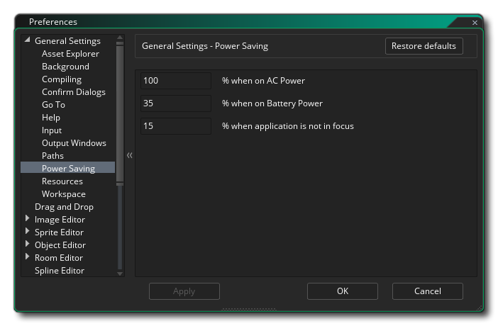The Power Saving preferences here will affect how much CPU power and GPU power will be used to generate the GameMaker Studio 2 IDE (essentially this will lower the base framerate at which the program runs and so lower power consumption). The options are:
- % when on AC power: The base power consumption when connected to a power input. Default is 100%.
- % when on battery power: The base power consumption when using battery to power the machine. Default is 35%.
- % when application is not in focus: The base power consumption when GameMaker Studio 2 is not in focus (regardless of the power supply). Default is 15%.
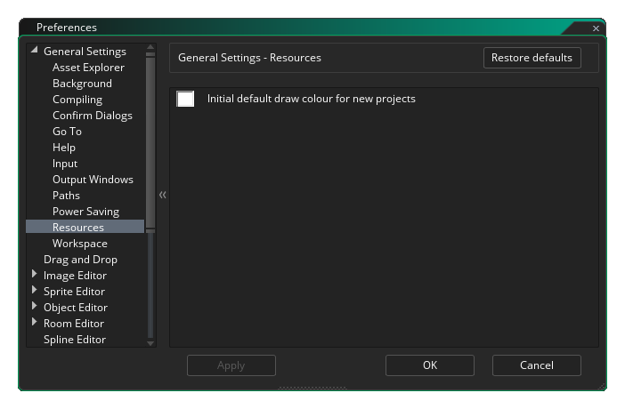The preferences here contain options for how certain resources will be drawn in your projects:
- Initial default draw colour for new projects: When you use a font or draw a shape using the GameMaker Studio 2 functions or DnD™ actions without specifying a colour, the colour set here is the one that will be used. The default colour is white ($ffffff).
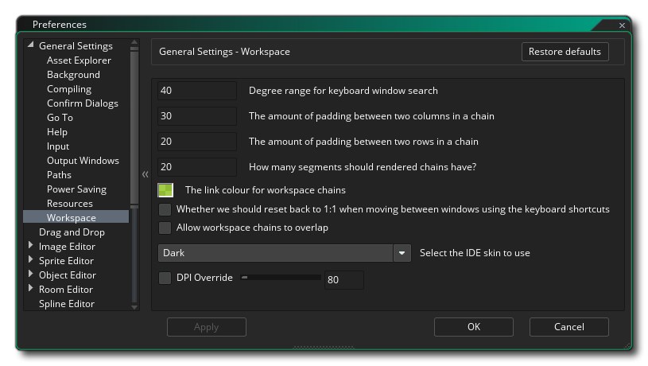The preferences here will affect how you move around within the different GameMaker Studio 2 workspaces. The options are:
- The degree range allowed when looking for a window using shortcuts: Within a workspace you can have multiple windows open for different objects and resources, and so to move around quickly between them you can use the keyboard shortcut
+ <Arrow Keys> to move between them. Given that the windows within a workspace are not grid aligned the IDE has to choose which window you mean when you press any of the possible 8 directions, and this option permits you to set the "look angle" that is used. The default value is 40°.
- The padding between two columns in a chain: Workspace elements are often "chained" to each other (for example, the Code Editor is chained to the Event Editor is chained to the Object Editor), and this option permits you to set the horizontal distance between any two chained windows. The default value is 30px.
- The padding between two rows in a chain: As mentioned above, workspace elements are often "chained" to each other and this option permits you to set the vertical distance between any two chained windows. The default value is 20px.
- How Many Segments Should Render Chains Have?: Here you can set the maximum number of segments for render chains. Lowering this value may help performance on lower end machines. The default value is 20.
- The link colour for workspace chains: This is the colour that will be used to display chains between workspace elements. Default colour is $99DD00 with an alpha of 153 ($99).
- Whether we should reset back to 1:1 when moving between windows using shortcuts: As mentioned above, you can skip from window to window within the workspace using keyboard shortcuts. You can also zoom the workspace in and out using the
. Setting this option will mean that if you have the workspace zoomed and use the shortcuts to skip to another window, then the workspace will be returned to a 1:1 view and centered on the selected window. This option is off by default.
- Allow workspace chains to overlap: When enabled this option will permit workspace chains to cross and overlap. This is off by default.
- Select the IDE skin to use: Here you can select from the different skins that the IDE can use. By default GameMaker Studio 2 comes with two skins, one light and one dark, and the initial setup uses the dark skin.
- DPI Override: This option lets you override the default DPI setting with your own. You must first enable the option and then set the value (the default value is 96), and once changed you will be prompted to restart the IDE, which may require you to save any work being done on the currently open project.